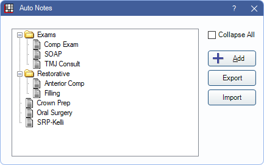
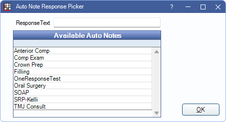
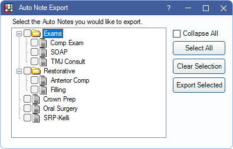

Auto Note Setup
In the Main Menu, click Setup, Auto Notes.
Auto Notes are templates used to insert large complex notes that are entered frequently in various text boxes throughout Open Dental. In addition to static text, prompts can offer a selection of responses or the ability to enter text.
All existing Auto Notes are listed and organized in a tree view.
- Click + to expand a folder tree.
- Click - to collapse.
- Check or uncheck the Collapse All checkbox to quickly collapse or expand all folders.
To create or reorder folders, see Definitions: Auto Note Categories.
To move an Auto Note to a different folder, select the Auto Note then drag it to another folder.
Add: Add a new Auto Note. See Auto Note Edit below for details
Export: Click to open the Auto Note Export window. See Auto Note Export below for details.
Import: Click to select a JSON file of Auto Notes exported from another Open Dental database to be imported. Imported Auto Notes do not retain folder organization. It may be required to re-add them to folders as desired.
Auto Note Edit
On the Auto Notes window, click Add, or double-click on an existing Auto Note to edit. The Auto Note Edit window opens.

The current text in the note is on the left. Prompts within the note are indicated by [Prompt:""].
- Name: Enter an identifying name for the Auto Note.
- Text: Enter the static text of the Auto Note.
- Add: Add new prompt options. See below for details.
- Available Prompts: All prompts that have been created are listed here. To insert a prompt, position the cursor in the Text field at the point of insertion, highlight the prompt, then click Insert. See Auto Note Prompt Edit below for details.
Auto Note Prompt Edit
In the Auto Note Edit window, click Add to create a new prompt, or double-click an existing prompt to edit.

- Description: Identifying name of the prompt.
- Type: There are three types of prompts:
- OneResponse: Users can select one option from a list of options.
- MultiResponse: Users can select many options from a list of options.
- Text: Users can enter free-form text.
- Prompt text: The text that indicates what information is requested. There is a 50-character limit. Prompts longer than 50 characters can be entered in the Text field of the Auto Note Edit window.
- Possible responses: For OneReponse or MultiResponse types only. Enter one response option per row.
- Default Text: For Text types only. The default text that is entered as the response. May leave blank. Users can edit as needed.
- Auto Note Response: For OneResponse only. Click to open Auto Note Response Picker.
- ResponseText: Enter the text for the response. This is in addition to any Auto Note text.
- Select an Auto Note from the Available Auto Notes grid to assign to the response line.
- Click OK to close the window and save changes.
- Up/Down: Quickly reorder the list. Click an item then click up or down.
Auto Note Export
In the Auto Notes window, click Export. The Auto Note Export window displays.
- Select All: Check all Auto Notes to export.
- Clear Selection: Deselect Auto Notes to export.
- Export Selected: Export the selected Auto Notes. When the File Explorer opens, select where to export Auto Notes.